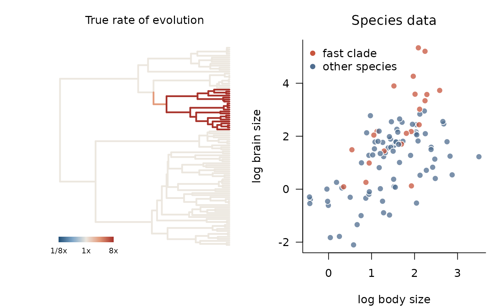
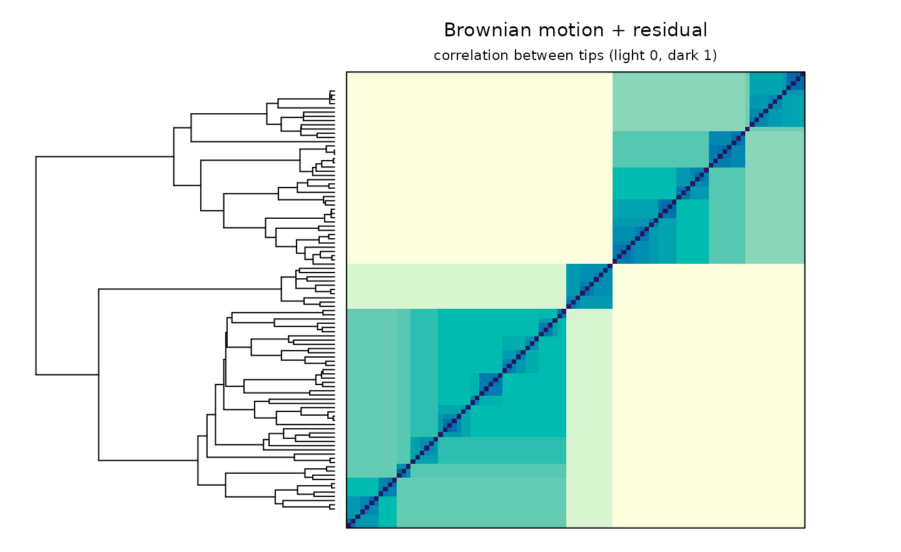
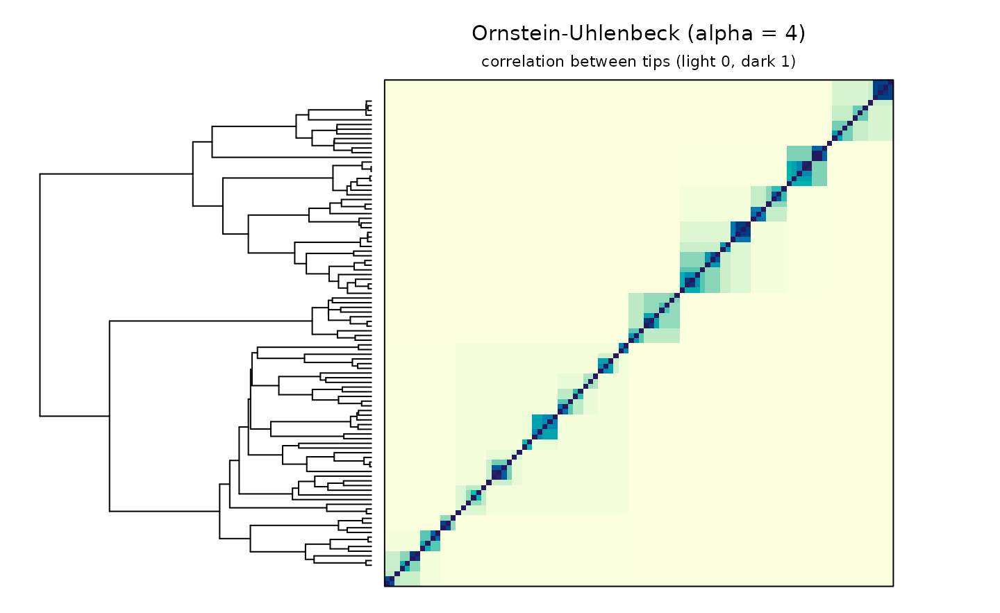
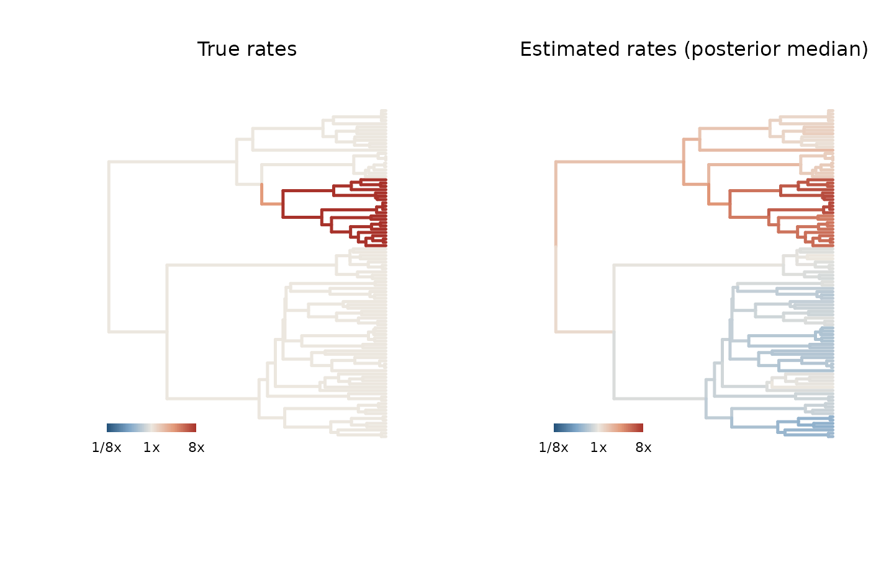
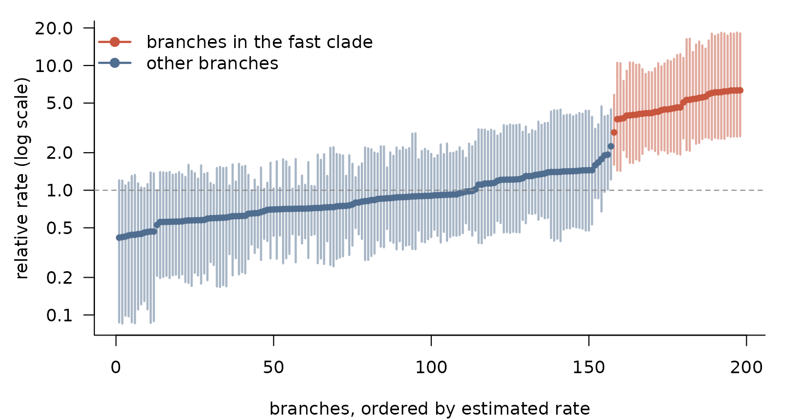

Every Gaussian model of continuous trait evolution, from Brownian motion (Felsenstein 1985) and Pagel’s λ (Pagel 1999) to Ornstein–Uhlenbeck (Hansen 1997; Butler and King 2004), early-burst (Blomberg et al. 2003; Harmon et al. 2010) and multi-rate models (O’Meara et al. 2006; Eastman et al. 2011; Venditti et al. 2011), says the same thing about the data:
and the models differ only in the covariance matrix
,
the kernel. In phylogp you build a model
by adding kernel components, and the package writes, compiles and fits
the corresponding Stan program.
This tutorial walks through a complete analysis of simulated data in which one clade evolves much faster than the rest of the tree. We will
- look at what different kernels assume,
- fit the classical models by maximum likelihood,
- fit a relaxed-rate kernel that lets the rate of evolution itself evolve along the tree, and compare models by leave-one-out cross-validation, and
- map the estimated rates back onto the tree.
Simulated data: a clade that evolves fast
We simulate a time-calibrated tree of 100 species, scaled to height 1, and pick a clade of about 20 species.
library(phylogp)
set.seed(13)
tr <- ape::rphylo(100, birth = 1, death = 0) # a pure-birth tree
tr$edge.length <- tr$edge.length / max(ape::node.depth.edgelength(tr))
N <- ape::Ntip(tr)
clade_sizes <- lengths(ape::prop.part(tr)) # tips below each internal node
fast_node <- N + which.min(abs(clade_sizes - 20))
descendants <- function(node) {
kids <- tr$edge[tr$edge[, 1] == node, 2]
c(node, unlist(lapply(kids, descendants)))
}
in_clade <- descendants(fast_node)
fast_tips <- tr$tip.label[intersect(in_clade, seq_len(N))]
length(fast_tips)
#> [1] 21Within that clade, a trait evolves 8 times faster than elsewhere. We
express this with the log-rate path z used by
k_relaxed(): the rate of an edge is
exp((z_start + z_end) / 2), so setting
z = log(8) on every node of the clade gives an 8-fold rate
inside it.
The response, say brain size, scales with body size (slope 0.7) and has a residual that evolves with these rates, plus a little species-level noise.
z <- numeric(N + tr$Nnode)
z[in_clade] <- log(8)
true_rates <- exp(0.5 * (z[tr$edge[, 1]] + z[tr$edge[, 2]]))
body <- kernel_simulate(k_bm(), tr, pars = list(bm1 = list(sigma = 1.5)))[, 1]
resid <- kernel_simulate(k_relaxed() + k_white(), tr,
pars = list(relaxed1 = list(sigma = 1, z = z),
white1 = list(sigma = 0.1)))[, 1]
d <- data.frame(body = body, brain = 0.5 + 0.7 * body + resid[names(body)])
head(d)
#> body brain
#> t1 2.2864931 3.57470177
#> t2 0.9728937 2.77482865
#> t3 -0.4241827 -0.38686205
#> t4 0.8656091 -0.34098188
#> t5 2.0111909 3.58599000
#> t6 1.5234227 0.09569618
op <- par(mfrow = c(1, 2), mar = c(4, 4, 3, 1))
plot_tree_rates(tr, true_rates, lim = 3, main = "True rate of evolution")
fast <- rownames(d) %in% fast_tips
plot(brain ~ body, data = d, pch = 21, cex = 1.2,
bg = adjustcolor(ifelse(fast, pal["fast"], pal["other"]), 0.75),
col = "white", las = 1, bty = "l", xlab = "log body size",
ylab = "log brain size", main = "Species data", font.main = 1)
legend("topleft", c("fast clade", "other species"), pt.bg = pal[1:2],
pch = 21, col = "white", pt.cex = 1.2, bty = "n")
par(op)What does a kernel assume?
Before fitting anything, kernel_plot() shows the
correlation between species that a kernel implies. Tips are in the same
order in the tree and in the matrix, so clades appear as blocks.
kernel_plot(k_bm() + k_white(), tr,
pars = list(white1 = list(sigma = 0.5)),
main = "Brownian motion + residual")
An Ornstein–Uhlenbeck kernel with strong selection forgets deep history: only close relatives remain correlated.
kernel_plot(k_ou(), tr, pars = list(ou1 = list(alpha = 4)),
main = "Ornstein-Uhlenbeck (alpha = 4)")
Classical models by maximum likelihood
With method = "optimize", phylo_gp() finds
maximum-likelihood estimates; for the classical kernels these agree with
phylolm to numerical precision.
classical <- list(BM = k_bm(), "Pagel's lambda" = k_lambda(),
OU = k_ou(), "Early burst" = k_eb())
ml <- lapply(classical, function(k)
phylo_gp(brain ~ body, data = d, tree = tr, kernel = k, method = "optimize"))
knitr::kable(data.frame(
logLik = sapply(ml, function(f) as.numeric(logLik(f))),
AIC = sapply(ml, AIC),
slope = sapply(ml, function(f) coef(f)[["body"]])
), digits = 2)| logLik | AIC | slope | |
|---|---|---|---|
| BM | -100.26 | 206.51 | 0.86 |
| Pagel’s lambda | -96.28 | 200.55 | 0.86 |
| OU | -97.65 | 203.30 | 0.87 |
| Early burst | -100.26 | 208.51 | 0.86 |
All four overestimate the slope (the true value is 0.7): none of them can represent a rate that differs between clades, so the large residuals of the fast clade, whose species sit at the upper end of body size, pull the regression line upwards.
A kernel whose rate evolves
k_relaxed() lets the log rate of evolution follow a
Brownian motion along the tree, without being told where any shift lies,
much as relaxed-clock models let rates of molecular evolution vary (Thorne and Kishino
2002); related approaches for continuous traits include
variable-rates models (Eastman et al. 2011; Venditti et al. 2011; Revell 2021) and relaxed
random walks (Fisher et al. 2021). Its rates
are latent variables, so it is fitted by Hamiltonian Monte Carlo. We
compare it with the Bayesian version of the Pagel’s λ model (BM plus
residual).
fit_bm <- phylo_gp(brain ~ body, data = d, tree = tr,
kernel = k_bm() + k_white(), seed = 1)
fit_relaxed <- phylo_gp(brain ~ body, data = d, tree = tr,
kernel = k_relaxed() + k_white(), seed = 1)
fit_relaxed
#> Phylogenetic Gaussian process
#> Formula: brain ~ body
#> Kernel: relaxed() + white()
#> Tips: 100
#> Likelihood: pruning (linear time)
#> Method: Bayesian (HMC)
#>
#> parameter mean sd q5 q95 rhat ess_bulk
#> 1 (Intercept) -0.152 0.7114 -1.338 0.988 1 6517
#> 2 body 0.693 0.1063 0.523 0.866 1 8007
#> 3 relaxed1_sigma 1.476 0.4628 0.858 2.294 1 3927
#> 4 relaxed1_tau 1.160 0.3570 0.658 1.823 1 2185
#> 5 white1_sigma 0.107 0.0473 0.030 0.192 1 2794relaxed1_tau, the standard deviation of log-rate change,
is clearly above zero: the data favour variable rates.
Leave-one-out cross-validation (Vehtari et al. 2017) asks which model
predicts each species better from all the others. phylogp
computes the exact conditional densities
in linear time, and loo() combines them across posterior
draws.
loo::loo_compare(list("BM + residual" = loo(fit_bm),
"relaxed + residual" = loo(fit_relaxed)))
#> Warning: Some Pareto k diagnostic values are too high. See help('pareto-k-diagnostic') for details.
#> model elpd_diff se_diff p_worse diag_diff diag_elpd
#> relaxed + residual 0.0 0.0 NA 1 k_psis > 0.7
#> BM + residual -20.9 6.1 1.00
#>
#> Diagnostic flags present.
#> See ?`loo-glossary` (sections `diag_diff` and `diag_elpd`)
#> or https://mc-stan.org/loo/reference/loo-glossary.html.The relaxed-rate kernel predicts left-out species clearly better, and its slope estimate is close to the true 0.7. The flags report species with Pareto , for which the importance-sampling approximation is unreliable; these are influential species, often in the fast clade. In a real analysis, recompute their contributions exactly by refitting without them before drawing conclusions.
Where did the rate change?
plot_edge_rates() colours every branch by its posterior
median rate, relative to a typical branch.
op <- par(mfrow = c(1, 2))
plot_tree_rates(tr, true_rates, lim = 3, main = "True rates")
plot_edge_rates(fit_relaxed, lim = 3, main = "Estimated rates (posterior median)")
par(op)The fast clade is recovered without any prior information about its
location. edge_rates() returns the numbers, with 90%
intervals:
er <- edge_rates(fit_relaxed)
ft <- fit_relaxed$tree
er$fast <- er$child %in% in_clade
er <- er[order(er$median), ]
op <- par(mar = c(4, 4.5, 1, 1))
plot(seq_len(nrow(er)), er$median, log = "y", type = "n", las = 1, bty = "l",
ylim = range(er$q5, er$q95), xlab = "branches, ordered by estimated rate",
ylab = "relative rate (log scale)")
segments(seq_len(nrow(er)), er$q5, y1 = er$q95,
col = adjustcolor(ifelse(er$fast, pal["fast"], pal["other"]), 0.5), lwd = 2)
points(seq_len(nrow(er)), er$median, pch = 19, cex = 0.7,
col = ifelse(er$fast, pal["fast"], pal["other"]))
abline(h = 1, lty = 2, col = pal["grey"])
legend("topleft", c("branches in the fast clade", "other branches"),
col = pal[1:2], pch = 19, lwd = 2, bty = "n")
par(op)The autocorrelated prior smooths an abrupt shift, so the size of the change is underestimated (the truth is 8-fold) even though its location is found. This is the expected behaviour of the model, and the reason to read the estimated ratio as conservative.
Several observations per species
Data often come as individuals rather than species means (Ives et al. 2007).
Give the column of species names in species and keep one
row per individual: the kernel then describes the species, a
k_white() component becomes the non-phylogenetic species
effect, and a residual standard deviation within species
(within_sigma) is added. The likelihood is exact and still
linear in the number of species, because it factorises into the species
means and the deviations from them. Here we sample two to six
individuals per species, with body size varying within species:
set.seed(7)
ind <- data.frame(species = rep(rownames(d), sample(2:6, N, replace = TRUE)))
dev_body <- rnorm(nrow(ind), 0, 0.2)
ind$body <- d[ind$species, "body"] + dev_body
ind$brain <- d[ind$species, "brain"] + 0.7 * dev_body + rnorm(nrow(ind), 0, 0.3)
nrow(ind)
#> [1] 395
fit_ind <- phylo_gp(brain ~ body, data = ind, tree = tr,
kernel = k_bm() + k_white(), species = "species",
method = "optimize")
fit_ind
#> Phylogenetic Gaussian process
#> Formula: brain ~ body
#> Kernel: bm() + white()
#> Tips: 100 (395 rows; within-species sd: within_sigma)
#> Likelihood: pruning (linear time)
#> Method: maximum likelihood
#>
#> parameter estimate
#> 1 (Intercept) -0.153
#> 2 body 0.713
#> 3 bm1_sigma 1.646
#> 4 white1_sigma 0.118
#> 5 within_sigma 0.306
#>
#> log-likelihood: -238.62657Leave-one-out cross-validation then leaves out whole species, and
predict() with type = "response" predicts a
new individual.
Under the hood
Each kernel component adds its contribution to the variance accumulated along every branch. When all components have this branch-wise form, the likelihood is evaluated by the linear-time pruning recursion (Felsenstein 1973; Ho and Ané 2014). You can inspect, and edit, the generated program:
code <- strsplit(kernel_stancode(fit_relaxed), "\n")[[1]]
cat(code[grep("^model", code):(grep("^generated", code) - 1)], sep = "\n")
#> model {
#> {
#> vector[E] w = rep_vector(0, E);
#> real rv = 0;
#> vector[N] t2 = square(se);
#> // relaxed()
#> {
#> w += square(relaxed1_sigma) * (exp(0.5 * (relaxed1_z[anc] + relaxed1_z[des])) .* len);
#> }
#> t2 += square(white1_sigma);
#> vector[N] r = y - X * coefs;
#> target += tree_pruning_lpdf(r | w, rv, t2, anc, des, first_child, n_nodes, root);
#> }
#> relaxed1_eta ~ std_normal();
#> if (use_prior == 1) {
#> coefs ~ normal(0, prior_beta_scale);
#> relaxed1_sigma ~ normal(0, relaxed1_sigma_scale);
#> relaxed1_tau ~ normal(0, relaxed1_tau_scale);
#> white1_sigma ~ normal(0, white1_sigma_scale);
#> }
#> }Called on a kernel instead of a fit, kernel_stancode()
produces the same program without fitting, and
kernel_standata() the matching data, so a model can be
taken further in cmdstanr directly.
Next steps
-
vignette("model-tour", package = "phylogp")goes through the main kinds of models, from Brownian motion to phylogeny plus geography. -
vignette("kernel-design", package = "phylogp")shows how to build and check your own kernels, including when a kernel is or is not a valid covariance on a tree with fossil tips. -
?classical-kernelslists the built-in components.